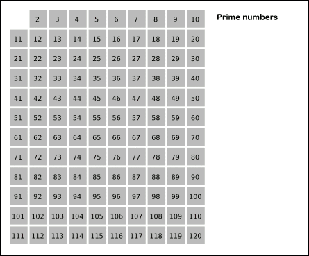
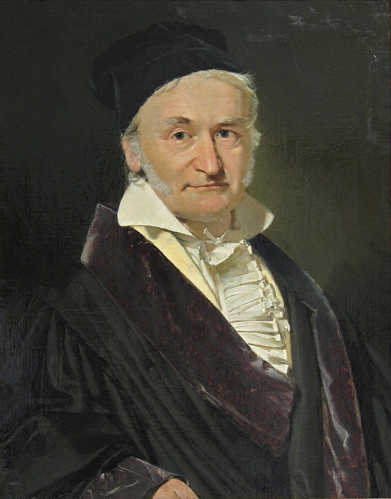

84 = 2² × 3 × 7 GCF(12x²y, 18xy²) = 6xy f(36) = 9 ← the factor-counting function
Those three lines are number theory in action — the study of whole numbers and the hidden patterns inside them. The first line breaks a number into its prime building blocks. The second finds the greatest common factor of two ALGEBRAIC expressions (yes, variables have fingerprints too). The third uses function notation to say "36 has exactly 9 factors" — and by the end of this lesson you'll compute f of any number in seconds, without listing a single factor.
You may have met the basic version of this material: divisibility rules, prime factorization, GCF and LCM. This honors edition keeps those foundations but rebuilds everything at algebra level. That means three upgrades:
- ·We PROVE the rules instead of just using them. Why does the digit-sum test work? You'll see it proven with nothing but distribution.
- ·Variables move in. GCFs of expressions like 12x²y, fractions with x in the denominator, and equations that divisibility helps us solve.
- ·Problems run backwards. Not "how many factors does 24 have?" but "find the SMALLEST number with exactly 8 factors."
Why do people care? Because number theory is the math behind simplifying fractions in one step, clearing denominators in equations, splitting things into fair groups, and figuring out when repeating events line up. And the prime numbers you'll master are so powerful that giant versions of them protect every password and credit card on the internet — using Euclid's algorithm, which you will learn, prove, and run in reverse.
In this lesson, you will:
- 1.Prove the divisibility rules with place-value algebra — including 8 and the amazing 11
- 2.Test primality with the square-root proof, and see Euclid's proof that primes never run out
- 3.Master prime fingerprints, exponent laws, and the factor function f(n) — forwards AND backwards
- 4.Find GCFs of numbers and variables, then use them to factor polynomials and simplify fractions
- 5.Run Euclid's algorithm, prove why it works, and reverse it to unlock Bézout's identity
- 6.Find LCMs with variables, clear fractions from equations, and solve GCF-LCM systems
- 7.Learn the classic mistakes — including the three-number trap — so you never make them
- 8.Practice with 100 problems at the end, then take the 🏆 Quiz!
How to use this lesson: Read the sections in order — each one is built on the one before it, and every new term is defined the moment it appears. Every worked example shows EVERY step, with a short reason for each move. Keep a pencil and paper next to you, and try every "Your Turn" box before reading its answer. Ready? Let's go!
📸 Pictures

The Sieve of Eratosthenes: cross out the multiples of 2, 3, 5 and 7, and the numbers left over are the primes! See source ↓

Carl Friedrich Gauss (1777–1855) called number theory "the queen of mathematics". See source ↓
🗺️ Your lesson map
Place-Value Algebra + Proving the Divisibility Rules 🧩Lesson 2
Prime Hunting — The Square-Root Proof 🎯Lesson 3
Fingerprints, Exponent Laws, and the Factor Function f(n) 🔍Lesson 4
GCF — Numbers, Variables, and Factoring Polynomials ⚡Lesson 5
Euclid's Algorithm — Proven, and Run in Reverse 🌟Lesson 6
LCM — Variables, Fraction-Clearing, and the Multiplication Trick ⚠️Lesson 7
Watch Out! Common Mistakes — Honors Edition 🧠Lesson 8
Review — The Big Picture 🏋️Practice Problems
100 problems to try 🏆Quiz
Test yourself: new questions every time!
📚 Picture Sources
- Picture 1 · Sieve of Eratosthenes animation. By SKopp at German Wikipedia. CC BY-SA 3.0. From Wikimedia Commons: https://commons.wikimedia.org/wiki/File:Sieve_of_Eratosthenes_animation.gif
- Picture 2 · Carl Friedrich Gauss 1840 by Jensen. By Christian Albrecht Jensen. Public domain. From Wikimedia Commons: https://commons.wikimedia.org/wiki/File:Carl_Friedrich_Gauss_1840_by_Jensen.jpg